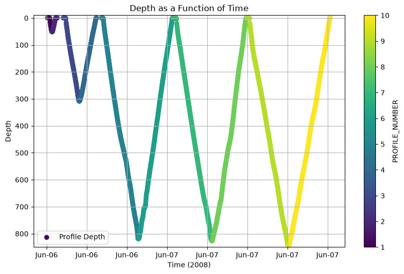

seagliderOG1 demo
The purpose of this notebook is to demonstrate the functionality of seagliderOG1 to convert from Seaglider basestation files to OG1 format.
OG1 format is a newly agreed format (since June 2024) for glider data sets from various platforms (e.g., Seaglider, Slocum, Seaexplorer). It lives on github here: (https://github.com/OceanGlidersCommunity/OG-format-user-manual).
OG1 manual: https://oceangliderscommunity.github.io/OG-format-user-manual/OG_Format.html
The test case is to convert sg015 data from the Labrador Sea in September 2004.
The demo is organised to show
Conversion of a single dive cycle (single
p*.ncfile)Conversion for a folder of local dive-cycle files (full mission of
p*.ncfiles)Download from remote server + conversion (directory with full mission of
p*.ncfiles)
Options are provided to only load e.g. 10 files, but note that OG1 format expects a full mission.
[1]:
import pathlib
import sys
script_dir = pathlib.Path().parent.absolute()
parent_dir = script_dir.parents[0]
sys.path.append(str(parent_dir))
sys.path.append(str(parent_dir) + '/seagliderOG1')
print(parent_dir)
print(sys.path)
### silence future warnings
import warnings
warnings.simplefilter(action='ignore', category=FutureWarning)
import xarray as xr
import os
from seagliderOG1 import readers, writers, plotters
from seagliderOG1 import convertOG1, vocabularies
/home/runner/work/seagliderOG1/seagliderOG1
['/home/runner/micromamba/envs/TEST/lib/python314.zip', '/home/runner/micromamba/envs/TEST/lib/python3.14', '/home/runner/micromamba/envs/TEST/lib/python3.14/lib-dynload', '', '/home/runner/micromamba/envs/TEST/lib/python3.14/site-packages', '/home/runner/work/seagliderOG1/seagliderOG1', '/home/runner/work/seagliderOG1/seagliderOG1/seagliderOG1']
[2]:
# Specify the path for writing datafiles
data_path = os.path.join(parent_dir, 'data')
Reading basestation files
This has three ways to load a glider dataset.
Load an example dataset using seagliderOG1.fetchers.load_sample_dataset
Alternatively, use your own with e.g. ds = xr.open_dataset('/path/to/yourfile.nc')
Load single sample dataset
[3]:
ds = readers.load_sample_dataset()
ds
[3]:
<xarray.Dataset> Size: 27kB
Dimensions: (sg_data_point: 53, gps_info: 3, gc_event: 7,
trajectory: 1)
Coordinates:
longitude (sg_data_point) float64 424B ...
latitude (sg_data_point) float64 424B ...
ctd_time (sg_data_point) datetime64[ns] 424B ...
ctd_depth (sg_data_point) float64 424B ...
* trajectory (trajectory) int32 4B 1
Dimensions without coordinates: sg_data_point, gps_info, gc_event
Data variables: (12/337)
surface_curr_north float64 8B ...
surface_curr_east float64 8B ...
start_of_climb_time float64 8B ...
sg_cal_volmax float64 8B ...
sg_cal_vbd_min_cnts int32 4B ...
sg_cal_vbd_max_cnts int32 4B ...
... ...
buoyancy (sg_data_point) float64 424B ...
SBE43_qc |S1 1B ...
GPSE_qc |S1 1B ...
GPS2_qc |S1 1B ...
GPS1_qc |S1 1B ...
CTD_qc |S1 1B ...
Attributes: (12/59)
date_modified: 2014-03-11T20:03:32Z
quality_control_version: 1.1
base_station_micro_version: 3897
time_coverage_resolution: PT1S
geospatial_vertical_max: 51.62461963987948
sea_name: North Atlantic Ocean
... ...
disclaimer: Data provided AS-IS.
geospatial_vertical_positive: no
date_created: 2014-03-11T20:03:32Z
geospatial_vertical_units: meter
dive_number: 1
history: Processing start:\n20:13:32 11 Mar 2014 ...Load datasets from a local directory
[4]:
# Specify the input directory on your local machine
input_dir = data_path + '/demo_sg005' ### chose the input directory with your data
# Load and concatenate all datasets in the input directory
# Optionally, specify the range of profiles to load (start_profile, end_profile)
list_datasets = readers.load_basestation_files(input_dir, start_profile=0, end_profile=5)
# Where list_datasets is a list of xarray datasets. A single dataset can be accessed as
ds = list_datasets[0]
Scanning files: 100%|██████████| 5/5 [00:00<00:00, 55.85file/s]
Loading datasets: 100%|██████████| 5/5 [00:00<00:00, 58.90file/s]
[5]:
ds = readers.load_sample_dataset()
Load datasets from a remote directory (URL)
[6]:
# Specify the server where data are located
#server = "https://www.ncei.noaa.gov/data/oceans/glider/seaglider/uw/033/20100903/"
# Load and concatenate all datasets from the server, optionally specifying the range of profiles to load
#list_datasets = readers.load_basestation_files(server, start_profile=1, end_profile=10)
Convert to OG1 format
Process:
For one basestation dataset, split the dataset by dimension (
split_ds)Transform into OG1 format: dataset with dims
sg_data_pointChange the dimension to
N_MEASUREMENTSRename variables according to
vocabularies.standard_namesAssign variable attributes according to
vocabularies.vocab_attrs. (Note: This could go wrong since it makes assumptions about the input variables. May need additional handling.)
Add missing mandatory variables:
From
split_ds[(gps_info,)], add theLATITUDE_GPS,LONGITUDE_GPSandTIME_GPS(Note: presentlyTIME_GPSis stripped before saving, butTIMEvalues containTIME_GPS)Create
PROFILE_NUMBERandPHASECalculate
DEPTH_Zwhich is positive up
Update attributes for the file.
Combines
creatorandcontributorfrom original attributes intocontributorAdds
contributing_institutionsbased oninstitutionReformats time in
time_coverage_*andstart_time–>start_dateAdds
date_modifiedRenames
comments–>history,site–>summaryAdds
title,platform,platform_vocabulary,featureType,Conventions,rtqc_method*according to OceanGliders formatRetains
naming_authority,institution,project,geospatial_*as OG attributesRetains extra attributes:
license,keywords,keywords_vocabulary,file_version,acknowledgement,date_created,disclaimer
Future behaviour to be added:
Retain the variables starting with
sg_caland check whether they vary over the mission (shouldn’t)Add sensors, using information in the
split_dswith no dimensionsNeed (from sg_cal_constants:
sg_calplusvolmax,vbd_cnts_per_cc,therm_expan,t_*,mass,hd_*,ctcor,cpcor,c_*,abs_compress,a,Tcor,Soc,Pcor,Foffset)Maybe also
reviewed,magnetic_variation(which will change with position),log_D_FLARE,flight_avg_speed_northandflight_avg_speed_eastalso with_gsm,depth_avg_curr_northanddepth_avg_curr_eastalso with_gsm,wlbb2f- means sensorsg_cal_mission_titlesg_cal_id_strcalibcomm_oxygencalibcommsbe41means ??hdm_qcglider
Convert a single (sample) dataset
[7]:
# Loads one dataset (p0150500_20050213.nc)
ds = readers.load_sample_dataset()
ds_OG1, var_list = convertOG1.convert_to_OG1(ds)
# Check the results - uncomment the following lines to either generate a plot or show the variables.
plotters.plot_profile_depth(ds_OG1)
Start converting 337 raw datasets to OG1 format ...
Adding dimension 'sg_data_point' with time variable 'ctd_time' and 48 non-time variables.
Adding dimension 'sg_data_point' with time variable 'time' and 48 non-time variables.
The following dimensions will not be merged into the new dataset: ['gc_event', 'trajectory', 'gps_info']
If instrument data is missing, make sure its dimension follows the naming convention '<instrument>_data_point'
from the ds.attrs['instrument'] list.
Total: 48 non-time variables + 1 combined TIME variable.
Variables without an assigned OG1 name: ['vert_speed_gsm', 'speed_gsm', 'sbe43_results_time', 'north_displacement_gsm', 'longitude_gsm', 'latitude_gsm', 'horz_speed_gsm', 'glide_angle_gsm', 'eng_elaps_t_0000', 'eng_elaps_t', 'east_displacement_gsm', 'density']
OG1 variables without vocabulary attributes: ['TEMP_RAW_QC', 'TEMP_QC', 'CNDC_RAW_QC', 'CNDC_QC', 'DEPTH2', 'DEPTH3', 'GLIDE_SPEED_QC', 'DOXY_QC', 'PSAL_RAW_QC', 'PSAL_QC']
Processing datasets: 100%|██████████| 1/1 [00:00<00:00, 3.62dataset/s]
Adding technical specifications for 'Wetlabs BB2FL-VMT' (sensor key: 'wlbb2f') from OG1_sensor_attrs.yaml
Adding technical specifications for 'SeaBird SBE 41 CTD' (sensor key: 'sbe41') from OG1_sensor_attrs.yaml
Adding technical specifications for 'Seabird SBE43F' (sensor key: 'sbe43') from OG1_sensor_attrs.yaml
Warning: No calibration info found for sensor 'wlbb2f'. Available calibration variables: ['sg_cal_calibcomm', 'sg_cal_calibcomm_oxygen']
The following HDM parameters were found: ['VBD_MIN_CNTS', 'VBD_CNTS_PER_CC', 'VBD_CC_PER_CNTS', 'MASS', 'VOLMAX', 'C_VBD', 'HD_A', 'HD_B', 'HD_C']

[8]:
### print the list of inital variables of the dataset
var_list
[8]:
| original_name | OG1_name | instrument | instrument_type | original_dimension | has_OG1_attributes | |
|---|---|---|---|---|---|---|
| 0 | temperature_raw | TEMP_RAW | sbe41 | CTD | sg_data_point | True |
| 1 | temperature | TEMP | sbe41 | CTD | sg_data_point | True |
| 2 | conductivity_raw | CNDC_RAW | sbe41 | CTD | sg_data_point | True |
| 3 | conductivity | CNDC | sbe41 | CTD | sg_data_point | True |
| 4 | ctd_depth | DEPTH | sbe41 | CTD | sg_data_point | True |
| ... | ... | ... | ... | ... | ... | ... |
| 56 | speed_qc | GLIDE_SPEED_QC | NaN | NaN | sg_data_point | False |
| 57 | sbe43_dissolved_oxygen_qc | DOXY_QC | sbe43 | Oxygen | sg_data_point | False |
| 58 | salinity_raw_qc | PSAL_RAW_QC | NaN | NaN | sg_data_point | False |
| 59 | salinity_qc | PSAL_QC | NaN | NaN | sg_data_point | False |
| 60 | time | TIME | NaN | NaN | [sg_data_point (ctd_time), sg_data_point (time)] | True |
61 rows × 6 columns
[9]:
# Print to screen a table of attributes
plotters.show_contents(ds_OG1,'attrs')
information is based on xarray Dataset
[9]:
| Attribute | Value | DType | |
|---|---|---|---|
| 0 | title | OceanGliders trajectory file | str |
| 1 | id | sg005_20080606T180738_delayed | str |
| 2 | platform | sub-surface gliders | str |
| 3 | platform_vocabulary | https://vocab.nerc.ac.uk/collection/L06/curren... | str |
| 4 | naming_authority | edu.washington.apl | str |
| 5 | institution | School of Oceanography\nUniversity of Washingt... | str |
| 6 | geospatial_lat_min | 61.41415 | ndarray |
| 7 | geospatial_lat_max | 61.41549829808199 | ndarray |
| 8 | geospatial_lon_min | -8.279016666666667 | ndarray |
| 9 | geospatial_lon_max | -8.273983333333332 | ndarray |
| 10 | geospatial_vertical_min | 0.0 | ndarray |
| 11 | geospatial_vertical_max | 51.40003042836588 | ndarray |
| 12 | time_coverage_start | 20080606T180256 | str |
| 13 | time_coverage_end | 20080606T183207 | str |
| 14 | site | Multiple transects of Faroe-Iceland Ridge uppe... | str |
| 15 | project | Iceland Scotland Ridge June 2008 | str |
| 16 | contributor_name | Charlie Eriksen, Peter Rhines | str |
| 17 | contributor_role | PI, Principal investigator | str |
| 18 | contributor_role_vocabulary | http://vocab.nerc.ac.uk/search_nvs/W08, | str |
| 19 | contributor_email | eriksen@uw.edu, | str |
| 20 | contributing_institutions | University of Washington - School of Oceanogra... | str |
| 21 | contributing_institutions_vocabulary | https://edmo.seadatanet.org/report/1434, | str |
| 22 | contributing_institutions_role | PI, | str |
| 23 | contributing_institutions_role_vocabulary | http://vocab.nerc.ac.uk/collection/W08/current/, | str |
| 24 | uri | 9e33a22e-a959-11e3-b35f-0026bb609360 | str |
| 25 | rtqc_method | No QC applied | str |
| 26 | rtqc_method_doi | n/a | str |
| 27 | comment | Processing start:\n20:13:32 11 Mar 2014 UTC: I... | str |
| 28 | start_date | 20080606T180738 | str |
| 29 | date_created | 20140311T200332 | str |
| 30 | featureType | trajectoryProfile | str |
| 31 | Conventions | CF-1.10,OG-1.0 | str |
| 32 | date_modified | 20261007T074641 | str |
| 33 | file_version | 2.71 | float32 |
| 34 | keywords_vocabulary | NASA/GCMD Earth Science Keywords Version 6.0.0.0 | str |
| 35 | keywords | Water Temperature, Conductivity, Salinity, Den... | str |
| 36 | license | These data may be redistributed and used witho... | str |
| 37 | disclaimer | Data provided AS-IS. | str |
| 38 | acknowledgment | National Science Foundation, OCE Division, Gra... | str |
| 39 | contributer_email | null@null.com | str |
[10]:
# Print to screen a table of the variables and variable attributes
plotters.show_contents(ds_OG1,'variables')
information is based on xarray Dataset
[10]:
| dims | units | comment | standard_name | dtype | |
|---|---|---|---|---|---|
| name | |||||
| BBP470 | N_MEASUREMENTS | m-1 | As reported by instrument | float32 | |
| BBP470_REF | N_MEASUREMENTS | As reported by instrument | float32 | ||
| BBP700 | N_MEASUREMENTS | m-1 | As reported by instrument | float32 | |
| BBP700_REF | N_MEASUREMENTS | As reported by instrument | float32 | ||
| BBP_VFTEMP | N_MEASUREMENTS | Celsius | As reported by the instrument | float32 | |
| BUOYANCY | N_MEASUREMENTS | g | Buoyancy of vehicle, corrected for compression effects | float32 | |
| CNDC | N_MEASUREMENTS | mS cm-1 | Conductivity corrected for anomalies | sea_water_electrical_conductivity | float32 |
| CNDC_QC | N_MEASUREMENTS | Whether to trust each corrected conductivity value | status_flag | int8 | |
| CNDC_RAW | N_MEASUREMENTS | mS cm-1 | Uncorrected conductivity | sea_water_electrical_conductivity | float32 |
| CNDC_RAW_QC | N_MEASUREMENTS | Whether to trust each raw conductivity value | status_flag | int8 | |
| COND_FREQ | N_MEASUREMENTS | Hz | As reported by the instrument | float32 | |
| DEPTH | N_MEASUREMENTS | m | from science pressure and interpolated | depth | float32 |
| DEPTH2 | N_MEASUREMENTS | cm | Measured vertical distance below the surface | depth | float32 |
| DEPTH3 | N_MEASUREMENTS | meters | Depth below the surface, corrected for average latitude | depth | float32 |
| DEPTH_Z | N_MEASUREMENTS | meters | Depth calculated from pressure using gsw library, positive up. | depth | float32 |
| DIVE_NUMBER | N_MEASUREMENTS | 1 | int16 | ||
| DOXY | N_MEASUREMENTS | micromoles/kg | Oxygen concentration corrected for salinity | mole_concentration_of_dissolved_molecular_oxygen_in_sea_water | float32 |
| DOXY_QC | N_MEASUREMENTS | Whether to trust each SBE43 dissolved oxygen value | status_flag | int8 | |
| EAST_DISPLACEMENT | N_MEASUREMENTS | m | Eastward displacement from hdm | float32 | |
| FLUOCHLA | N_MEASUREMENTS | As reported by instrument | float32 | ||
| GLIDER_HORZ_VELO_MODEL | N_MEASUREMENTS | m s-1 | Vehicle horizontal speed based on hdm | horizontal_glider_speed | float32 |
| GLIDER_VERT_VELO_MODEL | N_MEASUREMENTS | m s-1 | Vehicle vertical speed based on hdm | vertical_glider_speed | float32 |
| GLIDE_ANGLE | N_MEASUREMENTS | cm s-1 | Glide angle based on hdm | float32 | |
| GLIDE_SPEED | N_MEASUREMENTS | m s-1 | Vehicle speed based on hdm | float32 | |
| GLIDE_SPEED_QC | N_MEASUREMENTS | Whether to trust each hdm speed value | status_flag | int8 | |
| HEADING | N_MEASUREMENTS | degrees | Vehicle heading (magnetic) | float32 | |
| LATITUDE | N_MEASUREMENTS | degrees_north | Latitude of the sample based on hdm DAC | latitude | float64 |
| LATITUDE_GPS | N_MEASUREMENTS | degrees_north | latitude | float64 | |
| LONGITUDE | N_MEASUREMENTS | degrees_east | Longitude of the sample based on hdm DAC | longitude | float64 |
| LONGITUDE_GPS | N_MEASUREMENTS | degrees_east | longitude | float64 | |
| NORTH_DISPLACEMENT | N_MEASUREMENTS | m | Northward displacement from hdm | float32 | |
| O2_FREQ | N_MEASUREMENTS | Hz | As reported by instrument | float32 | |
| OXYSAT | N_MEASUREMENTS | micromoles/kg | Calculated saturation value for oxygen given measured presure and corrected temperature, and salinity | mole_fraction_of_oxygen_in_sea_water | float32 |
| PHASE | N_MEASUREMENTS | int8 | |||
| PHASE_QC | N_MEASUREMENTS | status_flag | int8 | ||
| PITCH | N_MEASUREMENTS | degrees | Vehicle pitch | float32 | |
| PITCH_CTL | N_MEASUREMENTS | counts | float32 | ||
| PRES | N_MEASUREMENTS | dbar | ctd pressure sensor | sea_water_pressure | float32 |
| PROFILE_NUMBER | N_MEASUREMENTS | int16 | |||
| PSAL | N_MEASUREMENTS | 1e-3 | Practical salinity of the water body by CTD and computation using UNESCO 1983 algorithm | sea_water_practical_salinity | float32 |
| PSAL_QC | N_MEASUREMENTS | Whether to trust each corrected salinity value | status_flag | int8 | |
| PSAL_RAW | N_MEASUREMENTS | 1e-3 | Practical salinity of the water body by CTD and computation using UNESCO 1983 algorithm | sea_water_practical_salinity | float32 |
| PSAL_RAW_QC | N_MEASUREMENTS | Whether to trust each raw salinity value | status_flag | int8 | |
| ROLL | N_MEASUREMENTS | degrees | Vehicle roll | float32 | |
| ROLL_CTL | N_MEASUREMENTS | counts | float32 | ||
| SIGMA_T | N_MEASUREMENTS | kg m-3 | Sigma based on density | sea_water_sigma_t | float32 |
| SIGTHETA | N_MEASUREMENTS | kg m-3 | sea_water_sigma_theta | float32 | |
| SOUND_VELOCITY | N_MEASUREMENTS | m s-1 | Sound velocity | speed_of_sound_in_sea_water | float32 |
| TEMP | N_MEASUREMENTS | Celsius | Termperature (in situ) corrected for thermistor first-order lag | sea_water_temperature | float32 |
| TEMP_FREQ | N_MEASUREMENTS | Hz | As reported by the instrument | float32 | |
| TEMP_QC | N_MEASUREMENTS | Whether to trust each corrected temperature value | status_flag | int8 | |
| TEMP_RAW | N_MEASUREMENTS | Celsius | Uncorrected temperature (in situ) | sea_water_temperature | float32 |
| TEMP_RAW_QC | N_MEASUREMENTS | Whether to trust each raw temperature value | status_flag | int8 | |
| THETA | N_MEASUREMENTS | Celsius | Potential temperature based on corrected salinity | sea_water_potential_temperature | float32 |
| TIME | N_MEASUREMENTS | seconds since 1970-01-01T00:00:00Z | Time of CTD sample in GMT epoch format | time | datetime64[ns] |
| TIME_GPS | N_MEASUREMENTS | datetime64[ns] | |||
| VBD_CC | N_MEASUREMENTS | cm3 | float32 | ||
| C_VBD | string | int16 | |||
| DEPLOYMENT_LATITUDE | string | float64 | |||
| DEPLOYMENT_LONGITUDE | string | float64 | |||
| DEPLOYMENT_TIME | string | datetime64[ns] | |||
| HD_A | string | Hydrodynamic lift factor for given hull shape (1/degrees of attack angle) | float32 | ||
| HD_B | string | Hydrodynamic drag factor for given hull shape (Pa^(-1/4)) | float32 | ||
| HD_C | string | Hydrodynamic induced drag factor for given hull shape (1/radians^2 of attack angle) | float32 | ||
| MASS | string | kg | Mass of the glider | float32 | |
| PLATFORM_MODEL | string | ||||
| PLATFORM_SERIAL_NUMBER | string | ||||
| SENSOR_CTD_245201 | string | ||||
| SENSOR_FLUOROMETER_0000 | string | ||||
| SENSOR_OXYGEN_005 | string | ||||
| TRAJECTORY | string | ||||
| VBD_CC_PER_CNTS | string | float32 | |||
| VBD_CNTS_PER_CC | string | float32 | |||
| VBD_MIN_CNTS | string | int16 | |||
| VOLMAX | string | m^3 | Maximum displaced volume of the glider | float32 | |
| WMO_IDENTIFIER | string |
Convert mission from a local directory of basestation files
For local data in the directory
input_dirCreates a plot of ctd_depth against ctd_time.
[11]:
# Specify the input directory on your local machine
input_dir = data_path + '/demo_sg005' ### chose the input directory with your data
# Load and concatenate all datasets in the input directory
# Optionally, specify the range of profiles to load (start_profile, end_profile)
list_datasets = readers.load_basestation_files(input_dir, start_profile=1, end_profile=5)
# Convert the list of datasets to OG1
ds_OG1, var_list = convertOG1.convert_to_OG1(list_datasets)
# Generate a simple plot
plotters.plot_profile_depth(ds_OG1)
plotters.show_contents(ds_OG1,'attrs')
Scanning files: 100%|██████████| 5/5 [00:00<00:00, 55.77file/s]
Loading datasets: 100%|██████████| 5/5 [00:00<00:00, 57.61file/s]
Start converting 5 raw datasets to OG1 format ...
Adding dimension 'sg_data_point' with time variable 'ctd_time' and 48 non-time variables.
Adding dimension 'sg_data_point' with time variable 'time' and 48 non-time variables.
The following dimensions will not be merged into the new dataset: ['gc_event', 'trajectory', 'gps_info']
If instrument data is missing, make sure its dimension follows the naming convention '<instrument>_data_point'
from the ds.attrs['instrument'] list.
Total: 48 non-time variables + 1 combined TIME variable.
Variables without an assigned OG1 name: ['vert_speed_gsm', 'speed_gsm', 'sbe43_results_time', 'north_displacement_gsm', 'longitude_gsm', 'latitude_gsm', 'horz_speed_gsm', 'glide_angle_gsm', 'eng_elaps_t_0000', 'eng_elaps_t', 'east_displacement_gsm', 'density']
OG1 variables without vocabulary attributes: ['TEMP_RAW_QC', 'TEMP_QC', 'CNDC_RAW_QC', 'CNDC_QC', 'DEPTH2', 'DEPTH3', 'GLIDE_SPEED_QC', 'DOXY_QC', 'PSAL_RAW_QC', 'PSAL_QC']
Processing datasets: 100%|██████████| 5/5 [00:01<00:00, 3.62dataset/s]
Adding technical specifications for 'Wetlabs BB2FL-VMT' (sensor key: 'wlbb2f') from OG1_sensor_attrs.yaml
Adding technical specifications for 'SeaBird SBE 41 CTD' (sensor key: 'sbe41') from OG1_sensor_attrs.yaml
Adding technical specifications for 'Seabird SBE43F' (sensor key: 'sbe43') from OG1_sensor_attrs.yaml
Warning: No calibration info found for sensor 'wlbb2f'. Available calibration variables: ['sg_cal_calibcomm', 'sg_cal_calibcomm_oxygen']
The following HDM parameters were found: ['VBD_MIN_CNTS', 'VBD_CNTS_PER_CC', 'VBD_CC_PER_CNTS', 'MASS', 'VOLMAX', 'C_VBD', 'HD_A', 'HD_B', 'HD_C']

information is based on xarray Dataset
[11]:
| Attribute | Value | DType | |
|---|---|---|---|
| 0 | title | OceanGliders trajectory file | str |
| 1 | id | sg005_20080606T180738_delayed | str |
| 2 | platform | sub-surface gliders | str |
| 3 | platform_vocabulary | https://vocab.nerc.ac.uk/collection/L06/curren... | str |
| 4 | naming_authority | edu.washington.apl | str |
| 5 | institution | School of Oceanography\nUniversity of Washingt... | str |
| 6 | geospatial_lat_min | 61.41231666666666 | ndarray |
| 7 | geospatial_lat_max | 61.57591666666667 | ndarray |
| 8 | geospatial_lon_min | -8.747133333333332 | ndarray |
| 9 | geospatial_lon_max | -8.273983333333332 | ndarray |
| 10 | geospatial_vertical_min | -0.3214989667970032 | ndarray |
| 11 | geospatial_vertical_max | 845.8311973927603 | ndarray |
| 12 | time_coverage_start | 20080606T180256 | str |
| 13 | time_coverage_end | 20080607T080838 | str |
| 14 | site | Multiple transects of Faroe-Iceland Ridge uppe... | str |
| 15 | project | Iceland Scotland Ridge June 2008 | str |
| 16 | contributor_name | Charlie Eriksen, Peter Rhines | str |
| 17 | contributor_role | PI, Principal investigator | str |
| 18 | contributor_role_vocabulary | http://vocab.nerc.ac.uk/search_nvs/W08, | str |
| 19 | contributor_email | eriksen@uw.edu, | str |
| 20 | contributing_institutions | University of Washington - School of Oceanogra... | str |
| 21 | contributing_institutions_vocabulary | https://edmo.seadatanet.org/report/1434, | str |
| 22 | contributing_institutions_role | PI, | str |
| 23 | contributing_institutions_role_vocabulary | http://vocab.nerc.ac.uk/collection/W08/current/, | str |
| 24 | uri | 9e33a22e-a959-11e3-b35f-0026bb609360 | str |
| 25 | rtqc_method | No QC applied | str |
| 26 | rtqc_method_doi | n/a | str |
| 27 | comment | Processing start:\n20:13:32 11 Mar 2014 UTC: I... | str |
| 28 | start_date | 20080606T180738 | str |
| 29 | date_created | 20140311T200332 | str |
| 30 | featureType | trajectoryProfile | str |
| 31 | Conventions | CF-1.10,OG-1.0 | str |
| 32 | date_modified | 20261007T074643 | str |
| 33 | file_version | 2.71 | float32 |
| 34 | keywords_vocabulary | NASA/GCMD Earth Science Keywords Version 6.0.0.0 | str |
| 35 | keywords | Water Temperature, Conductivity, Salinity, Den... | str |
| 36 | license | These data may be redistributed and used witho... | str |
| 37 | disclaimer | Data provided AS-IS. | str |
| 38 | acknowledgment | National Science Foundation, OCE Division, Gra... | str |
| 39 | contributer_email | null@null.com | str |
Convert mission from the NCEI server (with p*nc files)
Data from the sg015 mission in the Labrador Sea (https://www.ncei.noaa.gov/access/metadata/landing-page/bin/iso?id=gov.noaa.nodc:0111844), dataset identifier gov.noaa.nodc:0111844.
[12]:
# Specify the server where data are located
#server = "https://www.ncei.noaa.gov/data/oceans/glider/seaglider/uw/033/20100903/"
# Load and concatenate all datasets from the server, optionally specifying the range of profiles to load
#list_datasets = readers.load_basestation_files(server, start_profile=1, end_profile=19)
# Convert the list of datasets to OG1
#ds_OG1, var_list = convertOG1.convert_to_OG1(list_datasets)
Saving data
Due to problems with writing xarray datasets as netCDF when attributes are not of a specified type (str, Number, np.ndarray, np.number, list, tuple), a function was written save_dataset.
[13]:
# Write the file
# This writer catches errors in data types (DType errors) when using xr.to_netcdf()
# The solution is to convert them to strings, which may be undesired behaviour
output_file = os.path.join(data_path, 'demo_test.nc')
if os.path.exists(output_file):
os.remove(output_file)
writers.save_dataset(ds_OG1, output_file);
Dataset successfully saved to /home/runner/work/seagliderOG1/seagliderOG1/data/demo_test.nc
[14]:
# Load the data saved
ds1 = xr.open_dataset(output_file)
# Generate a simple plot
#plotters.show_contents(ds_all,'attrs')
plotters.plot_depth_colored(ds1, color_by='PROFILE_NUMBER')

Run multiple missions
[15]:
# Add these to existing attributes - update to your details
contrib_to_append = vocabularies.contrib_to_append
print(contrib_to_append)
{'contributor_name': 'Eleanor Frajka-Williams', 'contributor_email': 'eleanorfrajka@gmail.com', 'contributor_role': 'Data scientist', 'contributor_role_vocabulary': 'http://vocab.nerc.ac.uk/search_nvs/W08', 'contributing_institutions': 'University of Hamburg - Institute of Oceanography', 'contributing_institutions_vocabulary': 'https://edmo.seadatanet.org/report/1156', 'contributing_institutions_role': 'Data scientist', 'contributing_institutions_role_vocabulary': 'http://vocab.nerc.ac.uk/search_nvs/W08'}
[16]:
# Specify a list of servers or local directories
input_locations = [
# Either Iceland, Faroes or RAPID/MOCHA
#"https://www.ncei.noaa.gov/data/oceans/glider/seaglider/uw/005/20090829/", # done
#"https://www.ncei.noaa.gov/data/oceans/glider/seaglider/uw/005/20080606/", # done
#"https://www.ncei.noaa.gov/data/oceans/glider/seaglider/uw/005/20081106/", # done
#"https://www.ncei.noaa.gov/data/oceans/glider/seaglider/uw/012/20070831/", # done
#"https://www.ncei.noaa.gov/data/oceans/glider/seaglider/uw/014/20080214/", # done
#"https://www.ncei.noaa.gov/data/oceans/glider/seaglider/uw/014/20080222/", # done
#"https://www.ncei.noaa.gov/data/oceans/glider/seaglider/uw/016/20061112/", # done
#"https://www.ncei.noaa.gov/data/oceans/glider/seaglider/uw/016/20090605/", # done
#"https://www.ncei.noaa.gov/data/oceans/glider/seaglider/uw/016/20071113/", # done
#"https://www.ncei.noaa.gov/data/oceans/glider/seaglider/uw/016/20080607/", # done
#"https://www.ncei.noaa.gov/data/oceans/glider/seaglider/uw/033/20100518/", # done
"https://www.ncei.noaa.gov/data/oceans/glider/seaglider/uw/033/20100903/", # done
#"https://www.ncei.noaa.gov/data/oceans/glider/seaglider/uw/101/20081108/", # done
#"https://www.ncei.noaa.gov/data/oceans/glider/seaglider/uw/101/20061112/", # done
#"https://www.ncei.noaa.gov/data/oceans/glider/seaglider/uw/101/20070609/", # done
#"https://www.ncei.noaa.gov/data/oceans/glider/seaglider/uw/102/20061112/", # done
# Labrador Sea
#"https://www.ncei.noaa.gov/data/oceans/glider/seaglider/uw/015/20040924/",
#"https://www.ncei.noaa.gov/data/oceans/glider/seaglider/uw/014/20040924/",
#"https://www.ncei.noaa.gov/data/oceans/glider/seaglider/uw/008/20031002/",
#"https://www.ncei.noaa.gov/data/oceans/glider/seaglider/uw/004/20031002/",
#"https://www.ncei.noaa.gov/data/oceans/glider/seaglider/uw/016/20050406/",
# RAPID/MOCHA
#"https://www.ncei.noaa.gov/data/oceans/glider/seaglider/uw/033/20100729/",
#"https://www.ncei.noaa.gov/data/oceans/glider/seaglider/uw/034/20110128/",
]
#for input_loc in input_locations:
# Example usage
# ds_all = convertOG1.process_and_save_data(input_loc, output_dir=data_path, save=True, run_quietly=True)
[ ]: